Microsoft Sysmon Endpoint Detection & Investigation
Project Overview
This project demonstrates the deployment and operational use of Microsoft Sysmon within the MaryShield Cyber Lab. Sysmon provides detailed Windows endpoint telemetry including process creation, network connections, file activity, registry modifications, and other security-relevant system events.
Sysmon telemetry is analyzed locally through Windows Event Viewer and centrally through Splunk Enterprise and Wazuh XDR. Network activity can also be correlated with Security Onion and pfSense to provide additional context during SOC investigations.
The objective of this project is to demonstrate endpoint monitoring, process analysis, detection engineering, threat hunting, cross-platform correlation, and incident investigation using detailed Windows telemetry.
Project Objectives
- Deploy Microsoft Sysmon to Windows endpoints.
- Configure advanced Windows endpoint telemetry.
- Monitor process creation and command-line activity.
- Analyze network connections generated by endpoint processes.
- Detect and investigate PowerShell execution.
- Monitor file and registry activity.
- Forward Sysmon telemetry to Splunk Enterprise.
- Correlate endpoint events with Wazuh XDR.
- Compare endpoint activity with Security Onion network telemetry.
- Map observed behaviors to MITRE ATT&CK when supported by evidence.
- Develop detection logic for suspicious endpoint behavior.
- Document investigation findings in a professional SOC report.
Enterprise Sysmon Architecture
The architecture below shows how Sysmon telemetry is generated by Windows systems, recorded in the Sysmon Operational event log, forwarded to centralized security platforms, and correlated during SOC investigations.
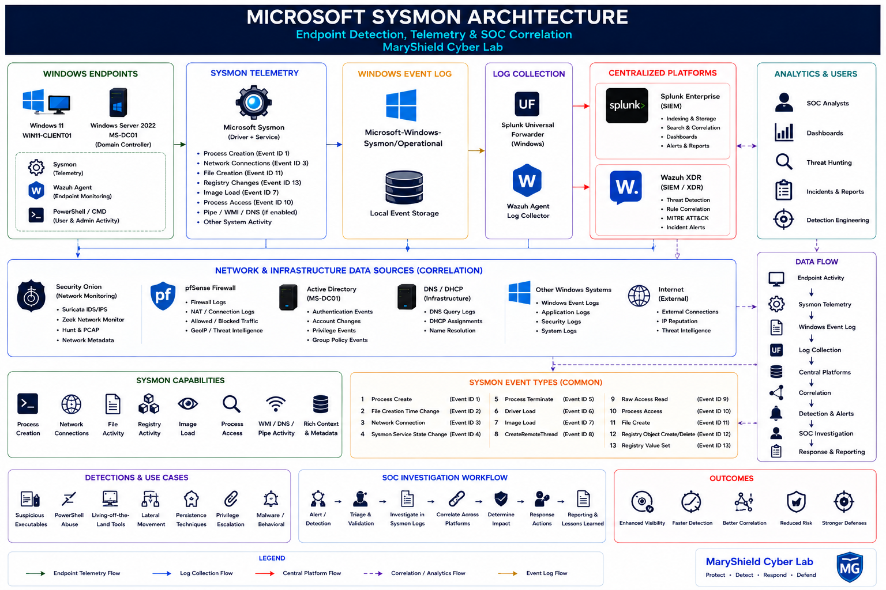
Lab Environment
| Component | Role |
|---|---|
| WIN11-CLIENT01 | Windows endpoint monitored with Sysmon |
| MS-DC01 | Windows Server / Active Directory endpoint telemetry |
| Microsoft Sysmon | Advanced Windows system telemetry |
| Splunk Universal Forwarder | Windows event forwarding |
| Splunk Enterprise | SIEM search, correlation, and dashboards |
| Wazuh Agent | Endpoint monitoring and security telemetry |
| Wazuh XDR | Security analytics and endpoint investigation |
| Security Onion | Network-side correlation |
| pfSense | Firewall and network evidence |
| Kali Linux | Authorized test-activity source |
Sysmon Installation
Microsoft Sysmon was installed on selected Windows systems to provide enhanced visibility into endpoint activity beyond standard Windows Event Logs.
Installation Goals
- Install the Sysmon service.
- Apply the selected Sysmon XML configuration.
- Verify successful service installation.
- Confirm creation of the Sysmon Operational event log.
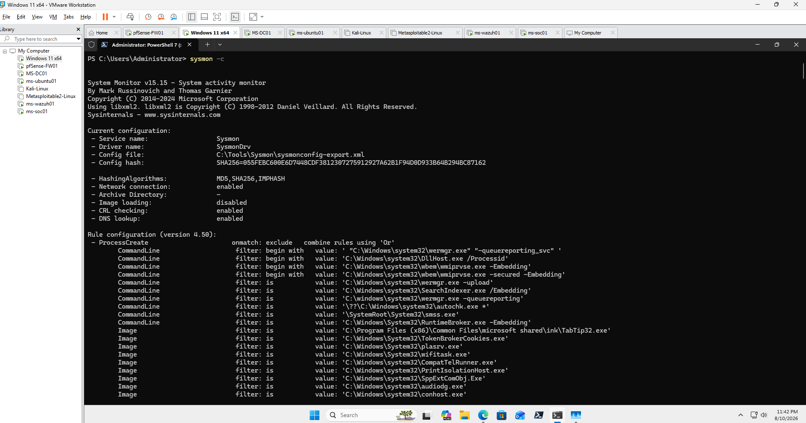
Sysmon Configuration
A Sysmon XML configuration defines which system activities are recorded and which events are filtered. Effective configuration is important because excessive logging can create unnecessary event volume while insufficient logging can reduce investigative visibility.
Configuration Areas
- Process creation
- Network connections
- File activity
- Registry modifications
- Process access
- Image loading
- DNS activity where supported
- Filtering and exclusions
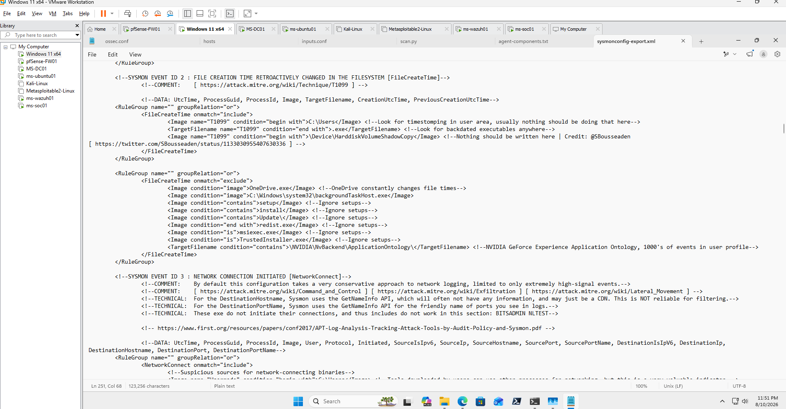
Sysmon Service Verification
After installation, the Sysmon service was verified to confirm that endpoint monitoring was operational.
Get-Service Sysmon*
Get-CimInstance Win32_Service |
Where-Object {$_.Name -like "Sysmon*"} |
Select-Object Name,State,StartMode
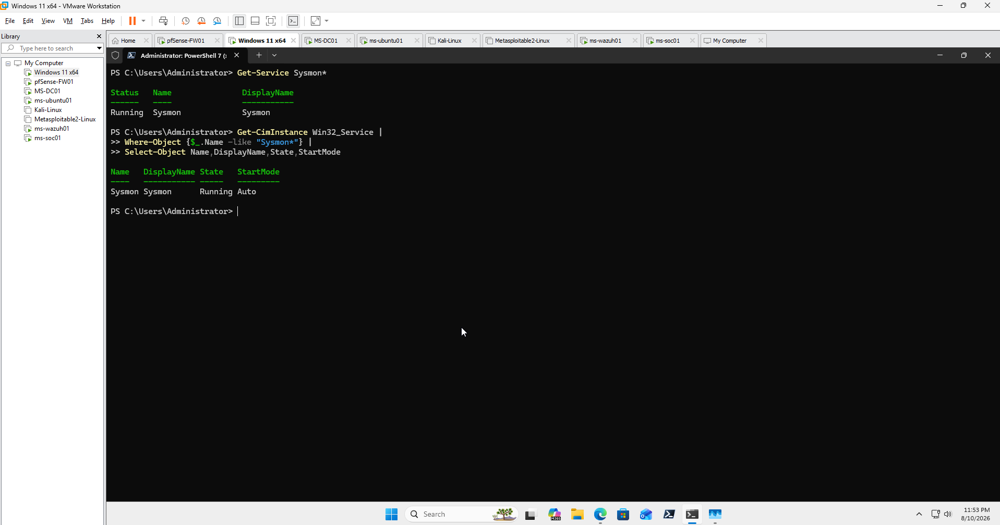
Sysmon Event Viewer
Sysmon records activity in the Windows Event Log under the Sysmon Operational channel.
The local event log provides direct access to the telemetry before it is forwarded to centralized security platforms.
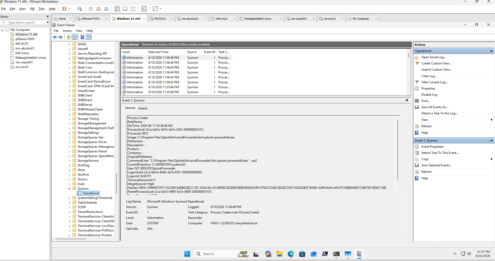
Process Creation Monitoring
Sysmon Event ID 1 records process creation and is one of the most valuable sources of endpoint telemetry during security investigations.
Key Fields
- Image
- CommandLine
- ParentImage
- User
- ProcessId
- ParentProcessId
- Hashes
- UtcTime
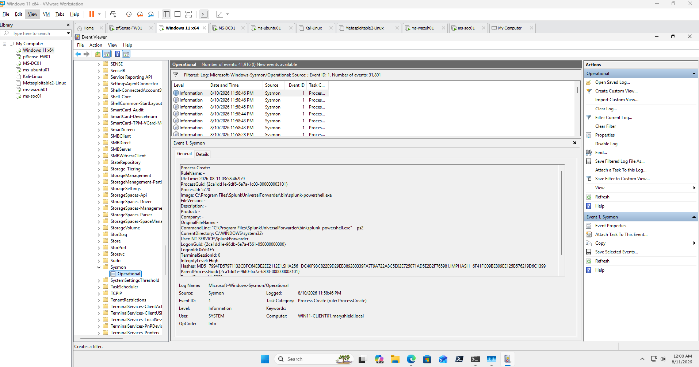
Network Connection Monitoring
When enabled by the Sysmon configuration, network connection telemetry provides visibility into outbound and inbound communications associated with specific endpoint processes.
Network Fields Reviewed
- SourceIp
- SourcePort
- DestinationIp
- DestinationPort
- Protocol
- Image
- User
- ProcessId
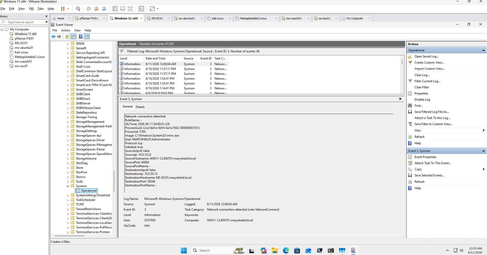
PowerShell Monitoring
PowerShell is widely used for legitimate administration but can also appear during suspicious activity. Sysmon process telemetry provides the process, command line, user context, and parent-process information needed to evaluate PowerShell execution.
Example Benign Test Activity
whoami
Get-Process
Get-Service
Get-NetTCPConnection
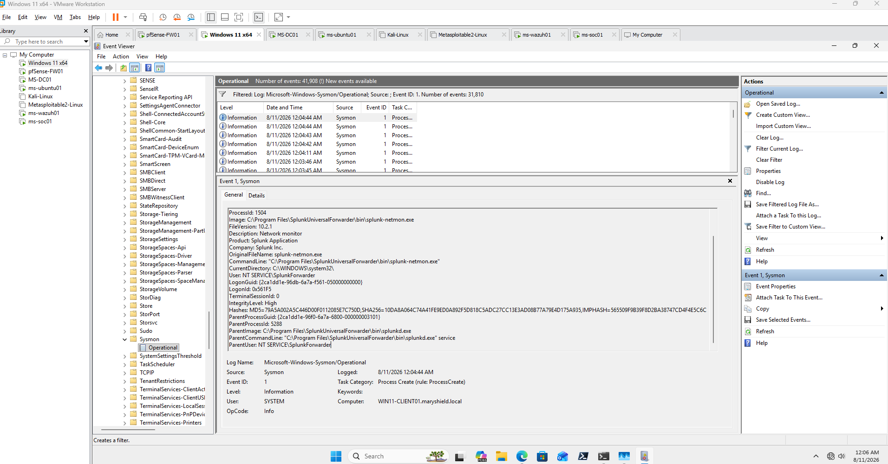
File Activity Monitoring
Controlled file activity was generated to demonstrate how Sysmon can provide evidence of file creation or modification events when the selected configuration records those activities.
Controlled Test
New-Item C:\Sysmon-Test -ItemType Directory -Force
New-Item C:\Sysmon-Test\soc-test.txt -ItemType File -Force
Set-Content C:\Sysmon-Test\soc-test.txt "MaryShield Sysmon Test"
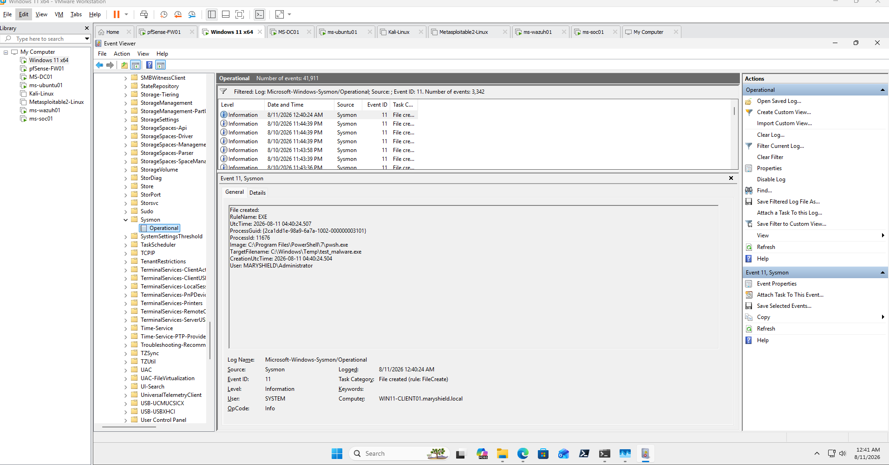
Registry Monitoring
Registry telemetry can provide important evidence during investigations involving persistence, system configuration changes, or administrative activity.
Controlled Test
New-Item -Path "HKCU:\Software\MaryShieldSysmonTest" -Force
New-ItemProperty `
-Path "HKCU:\Software\MaryShieldSysmonTest" `
-Name "SOC-Test" `
-Value "Sysmon-Lab" `
-PropertyType String `
-Force
The test registry key was removed after evidence collection.
Remove-Item "HKCU:\Software\MaryShieldSysmonTest" -Recurse -Force
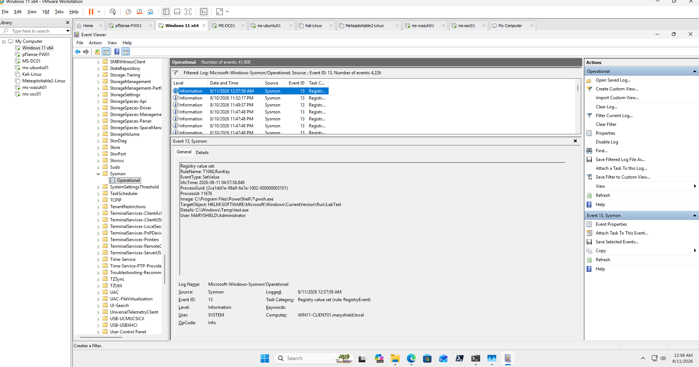
Splunk Enterprise Integration
Sysmon telemetry was forwarded to Splunk Enterprise for centralized searching, correlation, visualization, and detection engineering.
Log Collection
Sysmon events are collected from Windows endpoints through the Splunk Universal Forwarder.
Search & Investigation
Splunk SPL searches provide centralized access to process, command-line, network, and endpoint telemetry.
Detection Engineering
Sysmon fields can be used to build reusable searches and alerts for suspicious endpoint behavior.
Example Search
index=* "Sysmon"
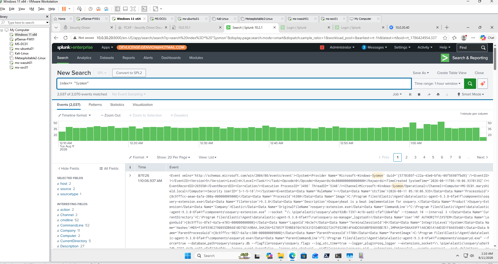
Wazuh XDR Integration
Wazuh XDR provides complementary endpoint-security context that can be compared with Sysmon and Splunk telemetry during investigations.
Investigation Fields
- Agent name
- Rule description
- Rule severity
- Windows Event ID
- Process information
- Timestamp
- MITRE ATT&CK mapping where available
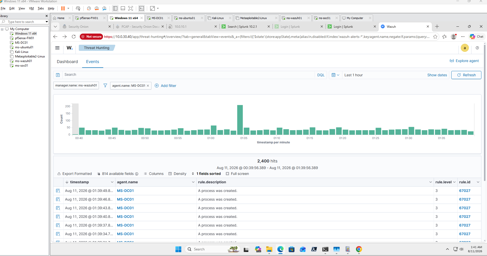
Cross-Platform Event Correlation
A key objective of the project was to correlate the same endpoint activity across multiple security platforms.
Hostname
Confirm that events reference the same endpoint.
Timestamp
Align event times across Sysmon, Splunk, and Wazuh.
User
Determine which account executed the activity.
Process
Compare executable and process information.
Command Line
Validate the command or administrative action that occurred.
Network Activity
Correlate endpoint process behavior with supporting network telemetry.
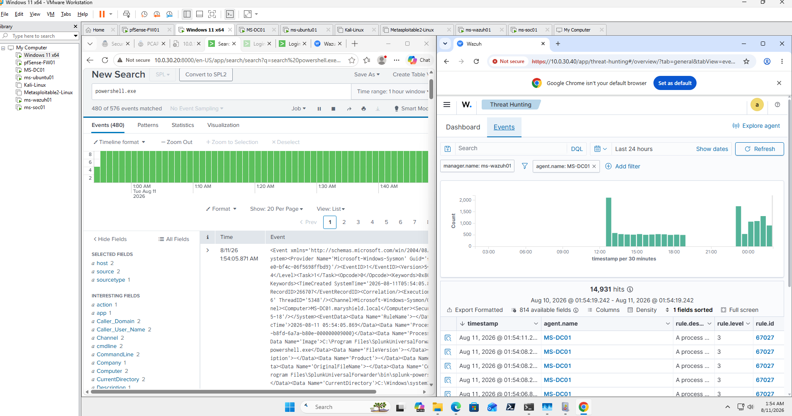
Security Onion Network Correlation
Where Sysmon recorded endpoint network activity, Security Onion was used to compare the endpoint evidence with network-side telemetry.
Correlation Fields
- Source IP
- Destination IP
- Destination port
- Protocol
- Timestamp
- Zeek metadata
- Suricata alerts where applicable
Combining endpoint and network telemetry provides a more complete view of security activity than either source alone.
MITRE ATT&CK Mapping
Observed behaviors were mapped to relevant MITRE ATT&CK tactics and techniques only when supported by investigation evidence.
Execution
Process and PowerShell execution activity can provide evidence of command execution.
Discovery
System, process, user, or network discovery activity may appear in endpoint telemetry.
Persistence
Registry or file activity may provide context when persistence behavior is observed.
Credential Access
Credential-related behavior may be mapped when directly supported by collected evidence.
Privilege Escalation
Elevated process behavior may provide supporting context during privilege investigations.
Command and Control
Endpoint network connections may support analysis of suspicious external communications.
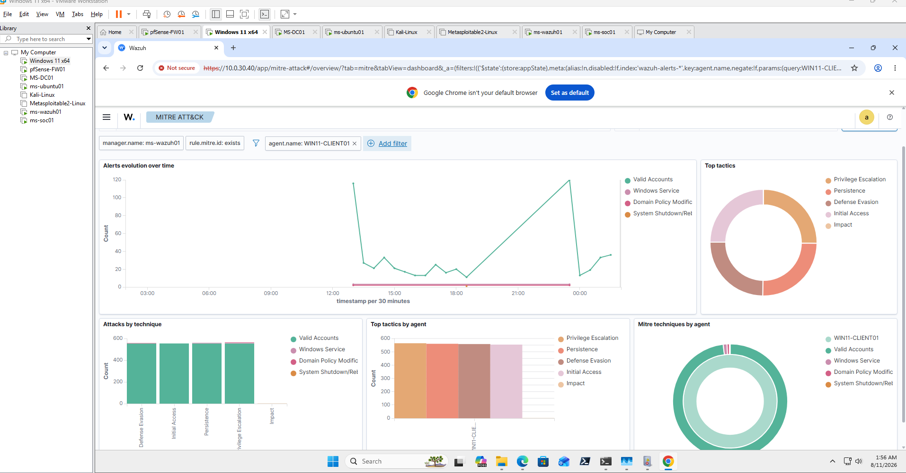
SOC Endpoint Investigation
A controlled investigation was performed to demonstrate how an analyst can use Sysmon telemetry to understand suspicious endpoint behavior.
Investigation Workflow
- Identify the suspicious endpoint event.
- Review process and command-line information.
- Identify the user associated with execution.
- Review parent and child process relationships.
- Search surrounding events in Splunk.
- Compare related Wazuh alerts.
- Review associated network connections.
- Correlate Security Onion telemetry when available.
- Determine whether the activity is expected or suspicious.
- Document findings and recommendations.
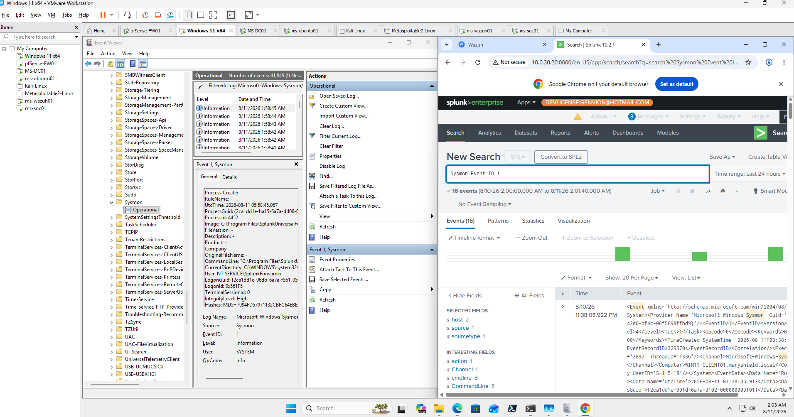
Sysmon Detection Workflow
The endpoint detection workflow demonstrates how raw Sysmon telemetry becomes actionable SOC evidence.
1. Endpoint Activity
A process, network connection, file event, or registry action occurs.
2. Sysmon Event
Sysmon records the activity according to the configured policy.
3. Log Collection
The event is stored locally and forwarded to centralized platforms.
4. Detection
Splunk or Wazuh evaluates the event using searches, rules, and contextual information.
5. SOC Triage
An analyst validates the event and determines whether additional investigation is required.
6. Correlation
Endpoint evidence is compared with network, identity, firewall, and SIEM telemetry.
Detection Engineering
Sysmon provides telemetry rather than automatically determining whether every recorded event is malicious. Detection engineering uses contextual logic to identify suspicious behavior within the collected data.
Detection Areas
- Unusual PowerShell execution
- Suspicious parent-child process relationships
- Command shell activity
- Unexpected administrative tools
- Unusual outbound network connections
- Registry persistence behavior
- Executable or script creation
- Account and system discovery
Detection rules should consider normal administrative behavior and legitimate applications to reduce false positives.
Lessons Learned
- Sysmon significantly improves Windows endpoint visibility.
- Process creation telemetry is valuable for reconstructing user and system activity.
- Command-line data provides important context during PowerShell and administrative investigations.
- Parent-child process relationships help identify unusual execution chains.
- Network telemetry allows endpoint processes to be associated with remote communications.
- Registry and file events can provide evidence of configuration or persistence activity.
- Centralized logging increases the investigative value of Sysmon telemetry.
- Splunk and Wazuh provide complementary ways to analyze endpoint events.
- Security Onion provides additional network context for endpoint activity.
- Effective Sysmon deployment requires careful configuration and filtering.
- Detection engineering is necessary to convert raw telemetry into actionable alerts.
Skills Demonstrated
Microsoft Sysmon
Deployed and analyzed advanced Windows endpoint telemetry.
Windows Event Analysis
Investigated Sysmon events through Windows Event Viewer.
Process Analysis
Reviewed executables, command lines, process IDs, users, and parent-child relationships.
PowerShell Investigation
Analyzed controlled PowerShell activity using endpoint telemetry.
Network Analysis
Associated endpoint processes with network connections and remote systems.
Registry Analysis
Reviewed registry-related activity during controlled tests.
Splunk Enterprise
Used centralized SIEM searches and correlation for Sysmon telemetry.
Wazuh XDR
Compared endpoint alerts and security context with Sysmon activity.
Threat Hunting
Used endpoint telemetry to investigate suspicious behavior proactively.
MITRE ATT&CK
Mapped supported endpoint behaviors to standardized attacker techniques.
Detection Engineering
Developed logic for identifying suspicious endpoint patterns.
SOC Investigation
Correlated endpoint and network telemetry to document security findings.
Final Sysmon Endpoint Investigation Report
The final report summarizes the Sysmon deployment, endpoint telemetry collected, security platforms used, investigation findings, MITRE ATT&CK mapping, detection-engineering observations, and recommended monitoring improvements.
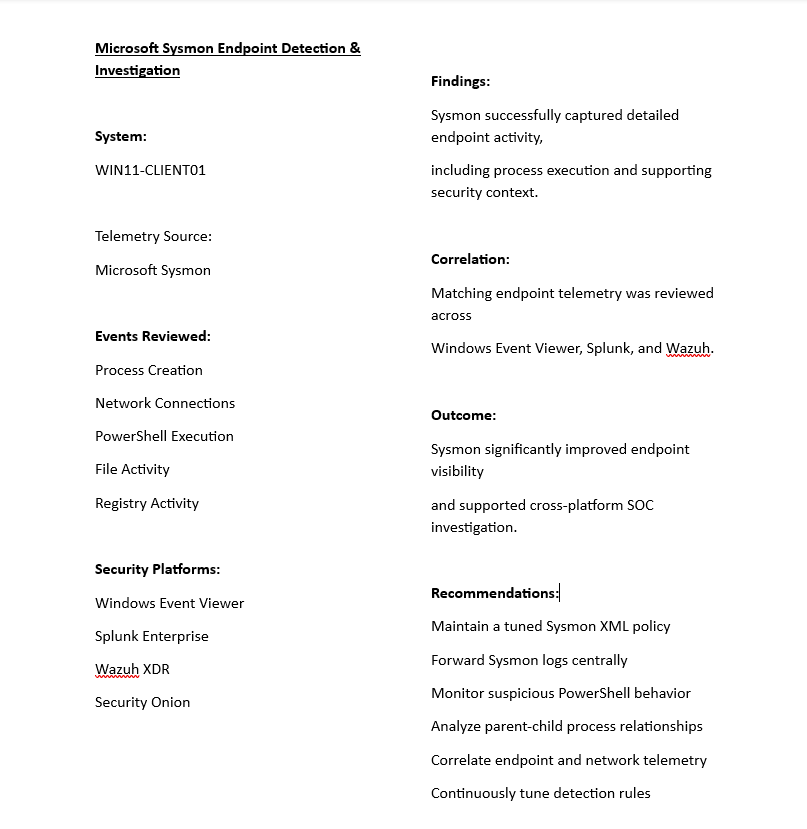
Related Projects
Explore other MaryShield Cyber Lab projects that support endpoint detection, threat hunting, and enterprise SOC operations.
Splunk Enterprise
Centralized Sysmon ingestion, searching, dashboards, alerts, and event correlation.
View ProjectActive Directory Detection
Windows authentication, identity, account, and administrative-event investigation.
View ProjectSecurity Onion
Network-side correlation using Suricata, Zeek, Hunt, and packet analysis.
View ProjectThreat Hunting
Cross-platform proactive investigation using endpoint and network telemetry.
View ProjectSOC Analyst Case Study
End-to-end enterprise SOC investigation and cross-platform correlation.
View Project